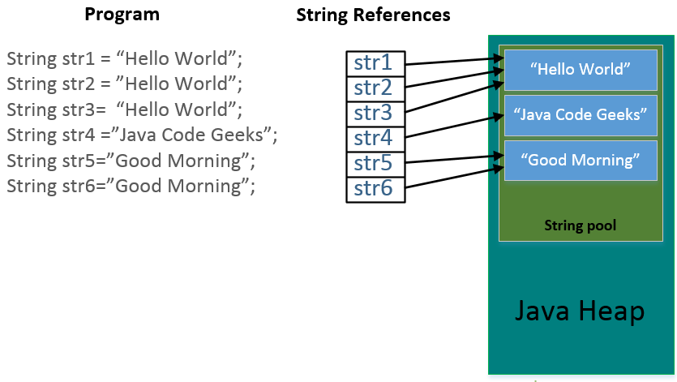

java.lang.String
Con la clase String representamos cadenas de texto, es una clase especial ya que se pueden crear instancias de esta clase sin necesidad de utilizar la palabra reservada new. No es necesario importar la clase String ya que pertenece al paquete java.lang
Internamente almacena un arreglo de caracteres que contiene cada caracter de la cadena.
Algunos Métodos
substring(int beginIndex) / substring(int beginIndex, int endIndex)
El método substring está sobrecargado en la clase String, retorna una subcadena del String
beginIndex: índice desde donde, endIndex: índice hasta antes de donde
"Hola".substring(2) -> "la"
"alumno".substring(1, 4) -> "lum"
length()
Retorna el tamaño del String (El número de caracteres que posee)
"Hola".length() -> 4
"alumno".length() -> 6
equals(Object object)
Verifica la igualdad de dos Strings caracter por caracter.
"Hola".equals("hola") -> false
"alumno".equals("alumno") -> true
equalsIgnoreCase(String anotherString)
Compara dos Strings ignorando mayúsculas y minúsculas
"Hola".equalsIgnoreCase("HOLA") -> true
"alumno".equalsIgnoreCase("alumno") -> true
charAt(int index)
Retorna el caracter del índice especificado
"Hola".charAt(0) -> 'H'
"alumno".charAt(2) -> 'u'
contains(CharSequence cs)
Retorna true si el String contiene la cadena pasada por parámetro.
"Hola".contains("ola") -> true
"alumno".contains("o") -> true
"smartphone".contains("x") -> false
startsWith(String prefix) / endsWith(String suffix)
Verifica si la cadena inicia o termina con determinada cadena.
"Hola".endsWith("ola") -> true
"alumno".startsWith("lumno") -> false
"smartphone".startsWith("s") -> true
trim(CharSequence cs)
Remueve los espacios en blanco del inicio y del final de la cadena.
"Hola".contains("ola") -> true
"alumno".contains("o") -> true
"smartphone".contains("x") -> false
Maneras de crear un String
// Asignandole un literal
String saluda = "Hola Mundo";
// Utilizando new
String nombre = new String("Julio");
String plato = new String(new char[] { 'l', 'o', 'c', 'r', 'o' });
Diferencias:
Cuando creamos un String como literal, el compilador reemplaza todas las ocurrencias de cadenas iguales por una referencia hacía un mismo String, es decir que todos estos Strings estarán apuntando hacía el mismo lugar de memoria, es así que:
String cadena = "abcd";
String otraCadena = "abcd";
String concatenacion = "ab" + "cd";
System.out.println(cadena == otraCadena); // true
System.out.println(concatenacion == otraCadena); // true
// operador igual cuando se aplica a objetos compara referencias no valores
// En las tres líneas solo se creo un objeto
La palabra clave new tiene la caracteristica que siempre crea un nuevo espacio en memoria para almacenar los objetos, es decir cada vez que usemos new estamos creando un nuevo objeto, almacenado en una dirección distinta de memoria.
String cadena = new String("abcd");
String otraCadena = String("abcd");
String concatenacion = new String("ab" + "cd");
System.out.println(cadena == otraCadena); // false
System.out.println(concatenacion == otraCadena); // false
// operador igual cuando se aplica a objetos compara referencias no valores
// En las tres líneas se crearon tres objetos
Pool de Strings
Preguntas

true o false
"hola" == new String("hola") // 1
"hola" == "hola" // 2
"hola".equals("hola") // 3
"ho" + "la" == "hola" // 4
"holA" == "Hola" // 5
"HOLA".equalsIgnoreCase("holA") // 6
new String("hola") == new String("hola") // 7
¿Cuál es el valor de retorno?
"cadena".substring(2) // 1
"cadena".substring(1, 2) // 2
"cadena".startsWith("cade") // 3
"cadena".endsWith("cade") // 4
"cadena".contains("cade") // 5
"cadena".charAt(1) // 6
"cadena".length() // 7
Recomendación
Siempre que desees comparar la igualdad en cuanto a valores de dos objetos usa el método equals(Object obj). Casi nunca o nunca usarás == con objetos, hay pocos casos de uso en el que querrás comparar si son el mismo objeto.
System.exit(0);